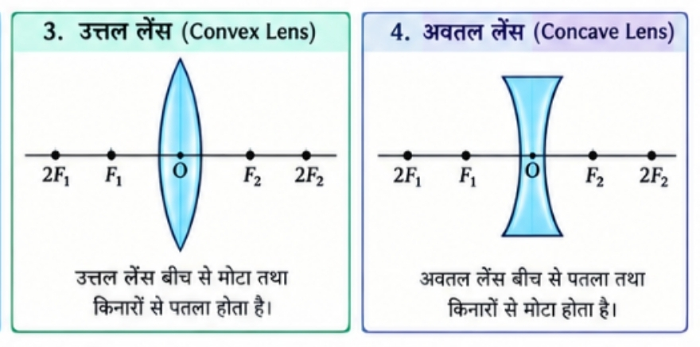
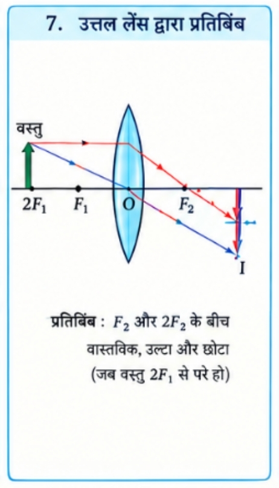
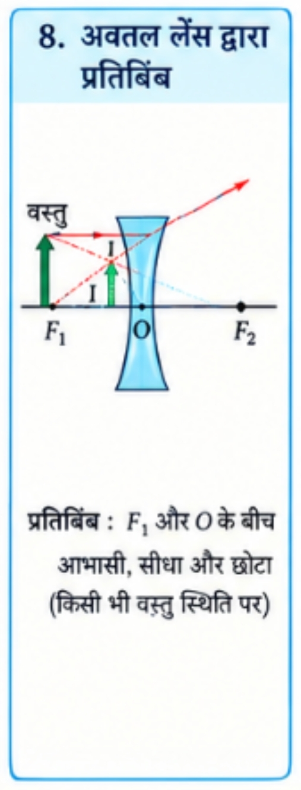

सरलरेखीय गमन: प्रकाश हमेशा एक सीधी रेखा (सरल रेखा) में गमन करता है।
प्रकाश किरण: प्रकाश के इस सरलरेखीय पथ को प्रकाश किरण कहते हैं।
प्रकाश का विवर्तन (Diffraction): यदि प्रकाश के पथ में रखी अपारदर्शी वस्तु अत्यंत छोटी हो, तो प्रकाश सरल रेखा में चलने के बजाय इसके किनारों पर मुड़ने की प्रवृत्ति दर्शाता है। इस प्रभाव को प्रकाश का विवर्तन कहते हैं।
तरंग रूप: विवर्तन की व्याख्या के लिए प्रकाश को एक तरंग के रूप में माना जाता है।
आधुनिक क्वांटम सिद्धांत: प्रकाश के आधुनिक क्वांटम सिद्धांत में प्रकाश को न तो पूरी तरह तरंग माना गया है और न ही कण। यह दोनों के बीच की कड़ी (द्वैत प्रकृति) है।
2. प्रकाश का परावर्तन (Reflection of Light)
जब प्रकाश किसी चमकदार सतह से टकराकर वापस उसी माध्यम में लौट आता है,
तो इसे परावर्तन कहते हैं।
परावर्तन के दो मुख्य नियम
प्रथम नियम: आपतन कोण (∠i), परावर्तन कोण (∠r) के हमेशा बराबर होता है।
∠i = ∠r
द्वितीय नियम: आपतित किरण, दर्पण के आपतन बिंदु पर अभिलंब तथा परावर्तित किरण — ये तीनों एक ही तल (Plane) में होते हैं।
परावर्तन का किरण आरेख
3. समतल दर्पण (Plane Mirror)
समतल दर्पण द्वारा बने प्रतिबिंब की निम्नलिखित विशेषताएँ होती हैं:
प्रतिबिंब हमेशा आभासी (Virtual) तथा सीधा (Erect) होता है।
प्रतिबिंब का आकार वस्तु के आकार के बराबर होता है।
प्रतिबिंब दर्पण के पीछे उतनी ही दूरी पर बनता है, जितनी दूरी पर दर्पण के सामने वस्तु रखी होती है।
प्रतिबिंब पार्श्व परिवर्तित (Laterally Inverted) होता है।
4. गोलीय दर्पण (Spherical Mirrors)
ऐसे दर्पण जिनका परावर्तक पृष्ठ गोलीय होता है, उन्हें गोलीय दर्पण कहते हैं।
ये दो प्रकार के होते हैं:
अवतल दर्पण (Concave Mirror): जिसका परावर्तक पृष्ठ अंदर की ओर (अर्थात गोले के केंद्र की ओर) वक्रित होता है।
उत्तल दर्पण (Convex Mirror): जिसका परावर्तक पृष्ठ बाहर की ओर वक्रित होता है।
अवतल एवं उत्तल दर्पण
गोलीय दर्पण से संबंधित मुख्य पारिभाषिक शब्द
ध्रुव (P - Pole): गोलीय दर्पण के परावर्तक पृष्ठ के केंद्र को दर्पण का ध्रुव कहते हैं।
वक्रता केंद्र (C - Center of Curvature): गोलीय दर्पण का परावर्तक पृष्ठ एक गोले का भाग है। इस गोले के केंद्र को गोलीय दर्पण का वक्रता केंद्र कहते हैं।
वक्रता त्रिज्या (R - Radius of Curvature): उस गोले की त्रिज्या जिसके परावर्तक पृष्ठ का दर्पण एक भाग है, दर्पण की वक्रता त्रिज्या कहलाती है।
मुख्य अक्ष (Principal Axis): दर्पण के ध्रुव (P) तथा वक्रता केंद्र (C) से गुजरने वाली एक सीधी काल्पनिक रेखा को मुख्य अक्ष कहते हैं।
मुख्य फोकस (F - Principal Focus): मुख्य अक्ष के समांतर आने वाली प्रकाश किरणें परावर्तन के पश्चात जिस बिंदु पर मिलती हैं या मिलती हुई प्रतीत होती हैं, उसे मुख्य फोकस कहते हैं।
फोकस दूरी (f - Focal Length): दर्पण के ध्रुव (P) तथा मुख्य फोकस (F) के बीच की दूरी को फोकस दूरी कहते हैं।
R = 2f
द्वारक (Aperture): गोलीय दर्पण के परावर्तक पृष्ठ की वृत्ताकार सीमा रेखा का प्रभावी व्यास दर्पण का द्वारक कहलाता है।
5. गोलीय दर्पणों से किरण आरेख खींचने के नियम
नियम i: मुख्य अक्ष के समांतर आने वाली प्रकाश किरण परावर्तन के बाद अवतल दर्पण के मुख्य फोकस से गुजरेगी या उत्तल दर्पण के मुख्य फोकस से अपसरित प्रतीत होगी।
नियम ii: अवतल दर्पण के मुख्य फोकस से गुजरने वाली या उत्तल दर्पण के मुख्य फोकस की ओर निर्देशित किरण परावर्तन के बाद मुख्य अक्ष के समांतर हो जाती है।
नियम iii: अवतल दर्पण के वक्रता केंद्र (C) से गुजरने वाली या उत्तल दर्पण के वक्रता केंद्र की ओर निर्देशित किरण परावर्तन के बाद अपने उसी पथ पर वापस लौट जाती है।
नियम iv: दर्पण के ध्रुव (P) पर मुख्य अक्ष से तिर्यक दिशा में आपतित किरण तिर्यक दिशा में ही परावर्तित होती है।
6. अवतल दर्पण द्वारा विभिन्न स्थितियों के लिए प्रतिबिंब निर्माण
अवतल दर्पण द्वारा विभिन्न स्थितियों के लिए प्रतिबिंब
बिम्ब की स्थिति
प्रतिबिंब की स्थिति
प्रतिबिंब का साइज़
प्रतिबिंब की प्रकृति
अनंत पर
फोकस F पर
अत्यधिक छोटा
वास्तविक तथा उल्टा
C से परे
F तथा C के बीच
छोटा
वास्तविक तथा उल्टा
C पर
C पर
समान साइज़
वास्तविक तथा उल्टा
C तथा F के बीच
C से परे
विवर्धित
वास्तविक तथा उल्टा
F पर
अनंत पर
अत्यधिक विवर्धित
वास्तविक तथा उल्टा
P तथा F के बीच
दर्पण के पीछे
विवर्धित
आभासी तथा सीधा
7. उत्तल दर्पण द्वारा प्रतिबिंब निर्माण
उत्तल दर्पण द्वारा प्रतिबिंब
बिम्ब की स्थिति
प्रतिबिंब की स्थिति
प्रतिबिंब का साइज़
प्रतिबिंब की प्रकृति
अनंत पर
फोकस F पर (दर्पण के पीछे)
अत्यधिक छोटा
आभासी तथा सीधा
अनंत व ध्रुव P के बीच
P तथा F के बीच
छोटा
आभासी तथा सीधा
8. गोलीय दर्पणों के उपयोग
अवतल दर्पण
टॉर्च, सर्चलाइट तथा वाहनों की हेडलाइट्स में शक्तिशाली समांतर किरण पुंज प्राप्त करने के लिए।
शेविंग दर्पण के रूप में।
दंत विशेषज्ञों द्वारा दांतों का बड़ा प्रतिबिंब देखने के लिए।
सौर भट्टियों में सूर्य के प्रकाश को केंद्रित करने के लिए।
उत्तल दर्पण
वाहनों में पश्च-दृश्य (Rear-view) दर्पण के रूप में।
यह हमेशा सीधा प्रतिबिंब बनाता है और इसका दृष्टि-क्षेत्र बहुत बड़ा होता है।
भाग 2: चिह्न परिपाटी, दर्पण सूत्र एवं आवर्धन
1. गोलीय दर्पणों के लिए कार्तिय चिह्न परिपाटी
बिम्ब को हमेशा दर्पण के बाईं ओर रखा जाता है।
मुख्य अक्ष के समांतर सभी दूरियाँ दर्पण के ध्रुव P से मापी जाती हैं।
P के दाईं ओर की दूरियाँ धनात्मक (+) होती हैं।
P के बाईं ओर की दूरियाँ ऋणात्मक (-) होती हैं।
मुख्य अक्ष के ऊपर की ऊँचाइयाँ धनात्मक (+) होती हैं।
मुख्य अक्ष के नीचे की ऊँचाइयाँ ऋणात्मक (-) होती हैं।
2. दर्पण सूत्र (Mirror Formula)
1/v + 1/u = 1/f
u = बिम्ब की दूरी
v = प्रतिबिंब की दूरी
f = मुख्य फोकस दूरी
3. आवर्धन (Magnification - m)
गोलीय दर्पण द्वारा उत्पन्न आवर्धन वह आपेक्षिक विस्तार है जिससे ज्ञात होता है कि प्रतिबिंब, वस्तु की अपेक्षा कितना गुना बड़ा या छोटा है।
m = h′ / h = −v / u
आवर्धन के चिन्ह का अर्थ
यदि m < 0 → प्रतिबिंब वास्तविक तथा उल्टा होता है।
यदि m > 0 → प्रतिबिंब आभासी तथा सीधा होता है।
यदि |m| > 1 → प्रतिबिंब बड़ा / विवर्धित होता है।
यदि |m| < 1 → प्रतिबिंब छोटा होता है।
यदि |m| = 1 → प्रतिबिंब वस्तु के समान आकार का होता है।
भाग 3: प्रकाश का अपवर्तन
प्रकाश का अपवर्तन (Refraction of Light)
जब प्रकाश की किरण एक पारदर्शी माध्यम से दूसरे पारदर्शी माध्यम में तिरछी प्रवेश करती है,
तो यह दोनों माध्यमों के इंटरफेस पर अपनी दिशा बदल लेती है।
इस परिघटना को प्रकाश का अपवर्तन कहते हैं।
दैनिक जीवन में उदाहरण
पानी से भरे किसी टैंक या बाल्टी की तली का ऊपर उठा हुआ प्रतीत होना।
पानी में आंशिक रूप से डूबी हुई पेंसिल का सतह पर मुड़ी हुई प्रतीत होना।
काँच के स्लैब के नीचे रखे अक्षर बड़े या ऊपर उठे हुए दिखाई देना।
1. काँच के आयताकार स्लैब से अपवर्तन
जब प्रकाश किरण विरल माध्यम (हवा) से सघन माध्यम (काँच) में प्रवेश करती है, तो वह अभिलंब की ओर झुक जाती है।
जब प्रकाश किरण सघन माध्यम (काँच) से विरल माध्यम (हवा) में जाती है, तो वह अभिलंब से दूर हट जाती है।
काँच के स्लैब से बाहर निकलने वाली किरण को निर्गत किरण (Emergent ray) कहते हैं।
निर्गत किरण आपतित किरण के समानांतर होती है।
आयताकार काँच के स्लैब से अपवर्तन
2. अपवर्तन के नियम (Laws of Refraction)
प्रथम नियम: आपतित किरण, अपवर्तित किरण तथा दोनों माध्यमों को अलग करने वाले पृष्ठ के आपतन बिंदु पर खींचा गया अभिलंब — ये तीनों एक ही तल में होते हैं।
द्वितीय नियम (स्नेल का नियम): किसी निश्चित रंग तथा निश्चित माध्यमों के युग्म के लिए, आपतन कोण की ज्या और अपवर्तन कोण की ज्या का अनुपात हमेशा एक स्थिरांक होता है।
sin i / sin r = constant = n₂₁
3. अपवर्तनांक (Refractive Index)
निर्वात में प्रकाश की चाल लगभग
3 × 108 m/s होती है।
सापेक्ष अपवर्तनांक
n₂₁ = v₁ / v₂
n₁₂ = v₂ / v₁
निरपेक्ष अपवर्तनांक
n = c / v
विभिन्न माध्यमों के निरपेक्ष अपवर्तनांक
माध्यम
अपवर्तनांक
वायु
1.0003
बर्फ
1.31
जल
1.33
अल्कोहल
1.36
किरोसिन
1.44
संगलित क्वार्ट्ज
1.46
तारपीन का तेल
1.47
बेंजीन
1.50
क्राउन काँच
1.52
कनाडा बालसम
1.53
खनिज नमक
1.54
कार्बन डाइसल्फाइड
1.63
सघन फ्लिंट काँच
1.65
रूबी
1.71
नीलम
1.77
हीरा
2.42
महत्वपूर्ण नोट:
द्रव्यमान घनत्व और प्रकाशिक घनत्व अलग-अलग होते हैं।
किरोसिन का द्रव्यमान घनत्व पानी से कम है लेकिन इसका प्रकाशिक घनत्व/अपवर्तनांक पानी से अधिक होता है।
भाग 4: गोलीय लेंस द्वारा अपवर्तन
गोलीय लेंस (Spherical Lens)
दो पृष्ठों से घिरा हुआ कोई पारदर्शी माध्यम, जिसका एक या दोनों पृष्ठ गोलीय होते हैं,
लेंस कहलाता है।
1. लेंस के प्रकार
उत्तल लेंस (Convex Lens): बीच से मोटा तथा किनारों से पतला होता है। यह प्रकाश किरणों को एक बिंदु पर इकट्ठा करता है, इसलिए इसे अभिसारी लेंस कहते हैं।
अवतल लेंस (Concave Lens): बीच से पतला तथा किनारों से मोटा होता है। यह प्रकाश किरणों को फैलाता है, इसलिए इसे अपसारी लेंस कहते हैं।
उत्तल एवं अवतल लेंस

2. लेंस से संबंधित मुख्य पारिभाषिक शब्द
वक्रता केंद्र (C): लेंस के गोलीय पृष्ठ जिस गोले के भाग होते हैं, उनके केंद्रों को लेंस का वक्रता केंद्र कहते हैं।
मुख्य अक्ष: लेंस के दोनों वक्रता केंद्रों से होकर गुजरने वाली काल्पनिक सीधी रेखा।
प्रकाशिक केंद्र (O): लेंस का केंद्रीय बिंदु। यहाँ से गुजरने वाली प्रकाश किरण बिना किसी विचलन के सीधी निकल जाती है।
द्वारक (Aperture): गोलीय लेंस की वृत्ताकार रूपरेखा का प्रभावी व्यास।
मुख्य फोकस (F): मुख्य अक्ष के समांतर आने वाली किरणें अपवर्तन के पश्चात जिस बिंदु पर मिलती हैं या मिलती हुई प्रतीत होती हैं, उसे मुख्य फोकस कहते हैं।
फोकस दूरी (f): प्रकाशिक केंद्र O से मुख्य फोकस F के बीच की दूरी।
3. लेंस द्वारा प्रतिबिंब निर्माण के नियम
नियम i: मुख्य अक्ष के समांतर आने वाली प्रकाश किरण उत्तल लेंस से अपवर्तन के बाद दूसरी ओर के मुख्य फोकस से गुजरेगी, अथवा अवतल लेंस की स्थिति में मुख्य फोकस से अपसरित प्रतीत होगी।
नियम ii: मुख्य फोकस से होकर गुजरने वाली किरण या मुख्य फोकस की ओर निर्देशित किरण अपवर्तन के बाद मुख्य अक्ष के समांतर हो जाती है।
नियम iii: लेंस के प्रकाशिक केंद्र O से गुजरने वाली प्रकाश किरण अपवर्तन के बाद बिना किसी विचलन के अपने सीधे पथ पर निर्गत होती है।
4. उत्तल लेंस द्वारा विभिन्न स्थितियों के लिए प्रतिबिंब निर्माण
उत्तल लेंस द्वारा बनाए प्रतिबिंब

बिम्ब की स्थिति
प्रतिबिंब की स्थिति
साइज़
प्रकृति
अनंत पर
फोकस F₂ पर
अत्यधिक छोटा
वास्तविक तथा उल्टा
2F₁ से परे
F₂ तथा 2F₂ के बीच
छोटा
वास्तविक तथा उल्टा
2F₁ पर
2F₂ पर
समान साइज़
वास्तविक तथा उल्टा
2F₁ तथा F₁ के बीच
2F₂ से परे
बड़ा
वास्तविक तथा उल्टा
फोकस F₁ पर
अनंत पर
असीमित रूप से बड़ा
वास्तविक तथा उल्टा
F₁ तथा O के बीच
जिस ओर बिम्ब है, उसी ओर
बड़ा
आभासी तथा सीधा
5. अवतल लेंस द्वारा विभिन्न स्थितियों के लिए प्रतिबिंब निर्माण
अवतल लेंस द्वारा बनाए प्रतिबिंब

बिम्ब की स्थिति
प्रतिबिंब की स्थिति
साइज़
प्रकृति
अनंत पर
फोकस F₁ पर
अत्यधिक छोटा
आभासी तथा सीधा
अनंत तथा O के बीच
F₁ तथा O के बीच
छोटा
आभासी तथा सीधा
6. गोलीय लेंसों के लिए चिह्न परिपाटी
दूरियों को प्रकाशिक केंद्र O से मापा जाता है।
उत्तल लेंस की फोकस दूरी हमेशा धनात्मक (+) होती है।
अवतल लेंस की फोकस दूरी हमेशा ऋणात्मक (-) होती है।
लेंस सूत्र
1/v − 1/u = 1/f
आवर्धन
m = h′ / h = v / u
नोट: दर्पण के आवर्धन सूत्र में ऋणात्मक चिह्न होता है,
जबकि लेंस के आवर्धन सूत्र में धनात्मक चिह्न होता है।
7. लेंस की क्षमता (Power of a Lens - P)
किसी लेंस द्वारा प्रकाश किरणों को अभिसरण या अपसरण करने की मात्रा/सामर्थ्य को
लेंस की क्षमता के रूप में व्यक्त किया जाता है।
यह इसकी फोकस दूरी का व्युत्क्रम होती है।